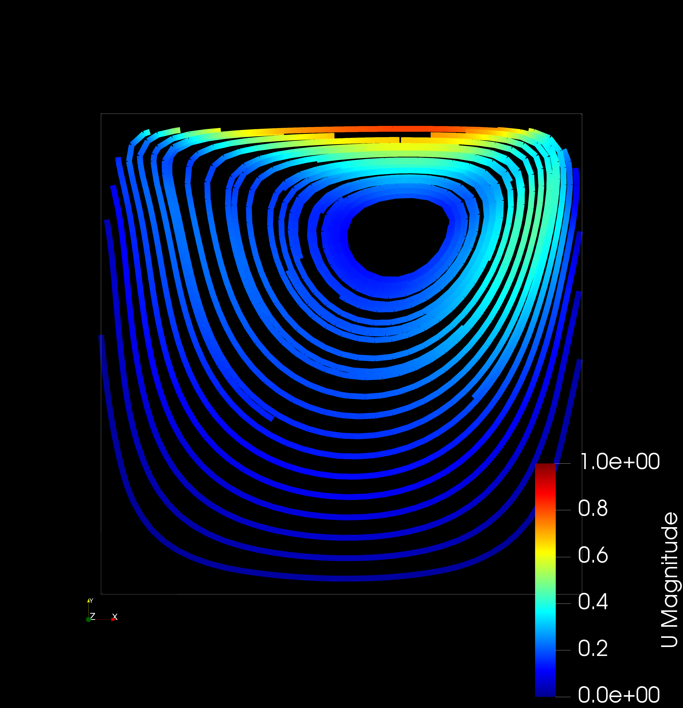
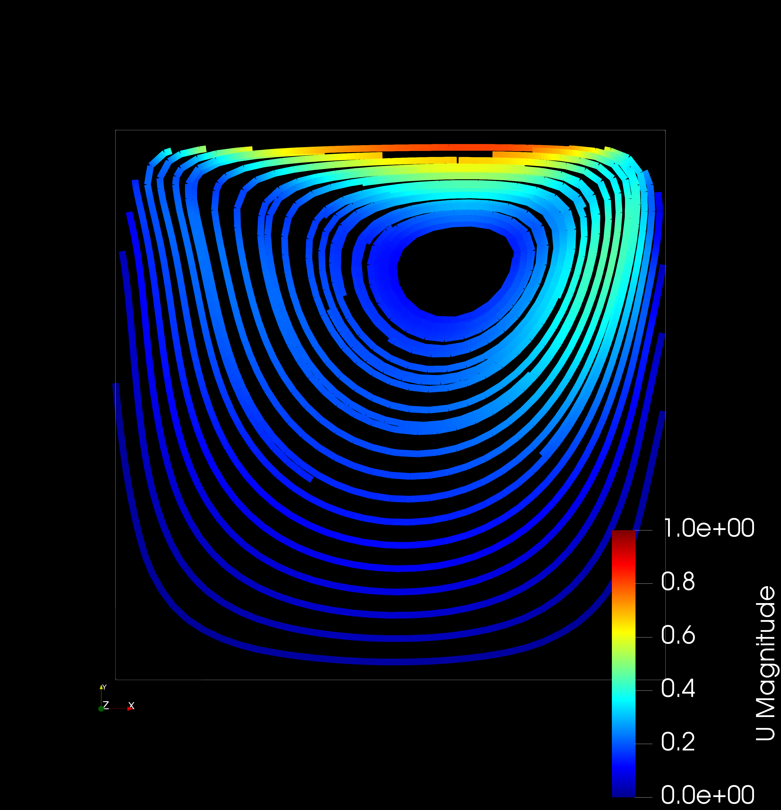
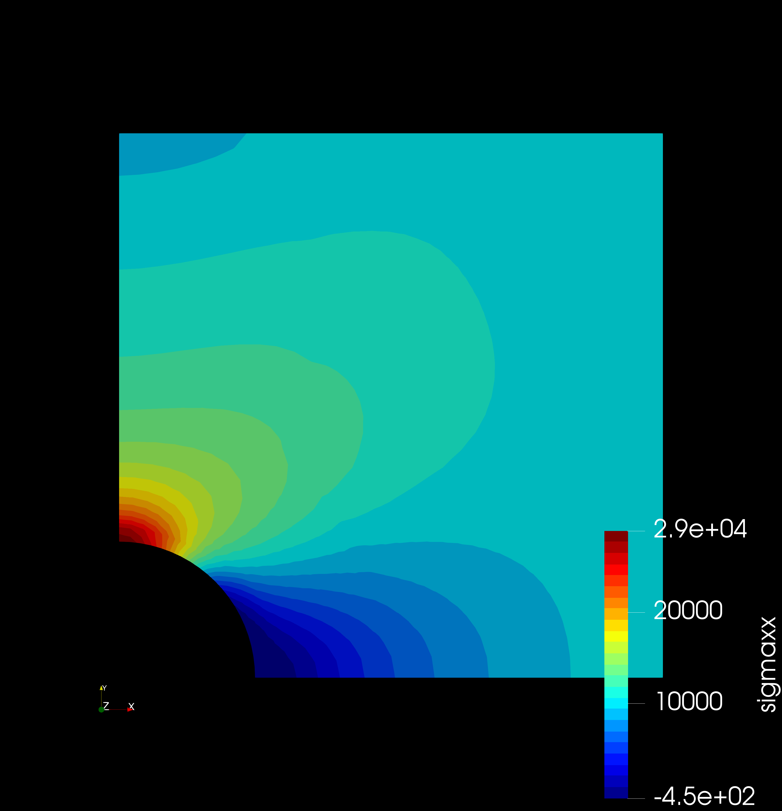
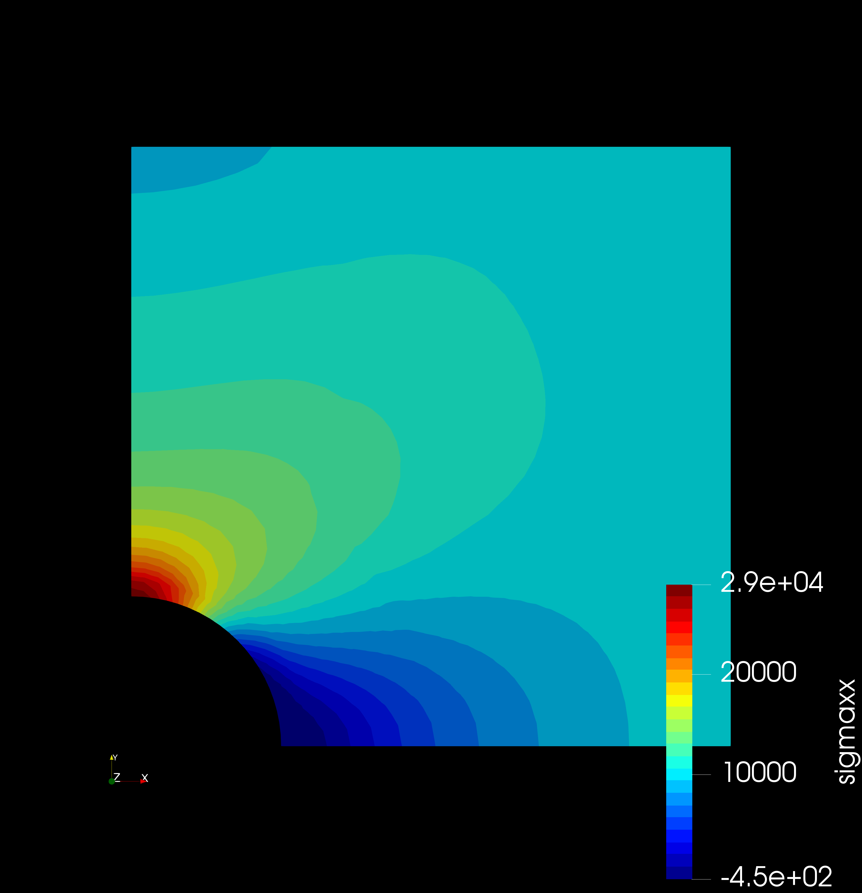

Bifurcating Artery Steady-State
Governing equations:
Mass conservation: \(\frac {\partial u_i}{\partial x_i} = 0\)
Momentum conservation:
\(\frac {\partial u_i}{\partial t} + u_j \frac{\partial u_i}{\partial x_j} = - \frac {1}{\rho} \frac {\partial P}{\partial x_i} + \nu \frac{\partial^2 u_i}{\partial x_j \partial x_j}\)
where \(u_i\) = Fluid velocity (vector), \(P\) = Fluid pressure (scalar), \(\rho\) = Density, \(\nu\) = Kinematic viscosity
Initial and boundary conditions: Inlet: 0.315 m/s steady
Outlet: 100 mmHg (13332 Pa) static
Wall: No-slip
Simplifying assumptions: Isothermal, incompressible flow
\(\rho\) = 1060 kg/m3, \(\nu\) = 3.30 x 10-6 m2/s
Mesh: 27,453 nodes, 87,540 elements

 

 
